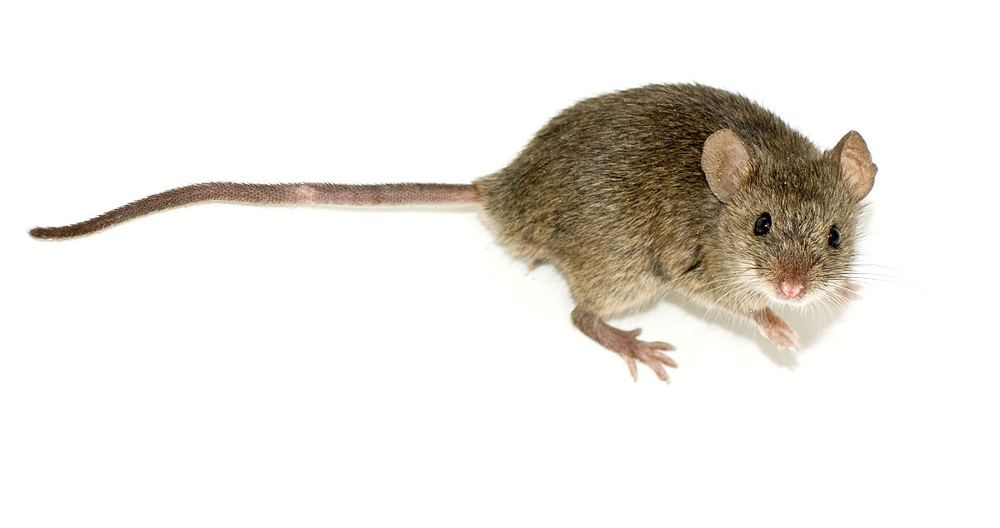
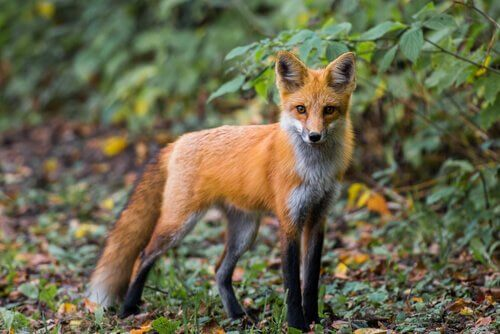

Rato
Rattus
| Reino: | Animalia |
| Classe: | Mammalia |
O Rato é uma designação comum para diversos pequenos mamíferos
pertencentes à ordem dos roedores, assim como um nome genérico dado a diversos mamíferos roedores
pertencentes às famílias Muridae, Cricetidae, Heteromyidae, Diatomyidae e Bathyergidae.
Caracterizam-se por possuir focinho pontudo, orelhas pequenas e arredondadas, e uma
longa cauda nua ou quase sem pêlos. As espécies mais conhecidas de rato são o Mus musculus, um
típico rato
doméstico, Rattus rattus e Rattus norvegicus, por vezes chamados de ratazanas e que
habitam esgotos e
córregos. Os ratos também são animais de estimação. Já em ambiente silvestre, a espécie mais comum é o
ratos-do-campo ou rato do mato, espécie importante para a cadeia alimentar, pois são alimentos de grandes
aves como falcões e águias. Os ratos domésticos possuem comportamentos furtivos, onde podem invadir casas e
despensas de comida. O americano Peromyscus leucopus e o Peromyscus maniculatus vivem em
ambiente não
urbano, e são geralmente chamados de camundongos. Esses, assim como outras espécies comuns de rato como
roedores existentes em todo o mundo, também podem habitar ambientes humanos. Porém, muitos deles são de
outro gênero.
Gatos, cães, raposas, corujas, aves de rapina, cobras e até mesmo alguns tipos de
artrópodes são os principais predadores dos ratos, principalmente as selvagens. No entanto, por causa de sua
notável capacidade de adaptação a quase qualquer ambiente, o rato é um dos mais bem sucedidos entre o gênero
mamíferos na Terra atualmente.
Raposa
Vulpes vulpes
| Reino: | Animalia |
| Classe: | Mammalia |
Raposas são pequenos a médios mamíferos onívoros pertencentes a
vários gêneros da família Canidae. As raposas têm o crânio achatado, orelhas triangulares verticais, focinho
pontiagudo e ligeiramente arrebitado e uma cauda longa e espessa.
Doze espécies pertencem ao grupo monofilético de "raposas verdadeiras" do gênero
Vulpes. Aproximadamente outras 25 espécies atuais ou extintas são parte do grupo parafilético das
raposas
sul-americanas ou do grupo periférico, que consiste na raposa-orelhas-de-morcego, raposa-cinzenta e
raposa-das-ilhas.
As raposas vivem em todos os continentes, exceto a Antártida. De longe, a espécie
mais comum e difundida de raposa é a raposa vermelha (Vulpes vulpes) com cerca de 47 subespécies
reconhecidas. A distribuição global das raposas, juntamente com sua ampla reputação de astúcia,
contribuíram para sua proeminência na cultura popular e no folclore em muitas sociedades ao redor do mundo.
A caça à raposa com matilhas de cães, há muito uma atividade estabelecida na Europa, especialmente nas Ilhas
Britânicas, foi exportada por colonos europeus para várias partes do Novo Mundo.